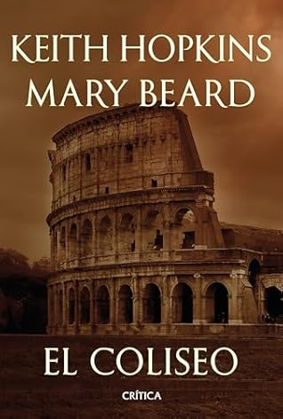

El Coliseo
Reseña por Jorge I. Zuluaga

Ver reseña en GoodReads (necesita cuenta)
Para mi gusto, lamentablemente, Mary Beard no tiene muchos libros buenos. La razón, creo yo, no es ella misma, sino los editores que han abusado de ese manido mecanismo de usar artículos suyos en medios técnicos para producir libros prácticamente ilegibles (por ejemplo Doce Césares). Creo que los he leído todos (solo me falta el de Pompeya que lo tengo ahí esperando con un poco de miedo) y me atrevería a afirmar que hay un 50% de probabilidad de que un libro de Mary Beard defraude.
Pero no es el caso de "El Coliseo".
El libro, escrito en colaboración con Keith Hopkins, o para ser realmente justo, el libro de Hopkins, que es escrito en colaboración con Mary Beard, presenta una panorámica relativamente amplia de la historia del Anfiteatro Flavio, un edificio que recibió el nombre por el que todos lo conocemos, el "Coliseo", apenas en la edad media.
El libro no solo hace una relación de los períodos más importantes de esta, una de las más increíbles obras civiles de la tardoantigüedad romana, una de los que sobrevivió casi completa a los rigores del tiempo. La historia en este libro nos lleva desde sus humildes orígenes como un espejo de agua en la Domus Aurea de Nerón, pasando por su diseño y construcción (¡es una impresionante obra de ingeniería!) y el uso continuado por caso 5 siglos como sede de espectáculos de todos los tipos; hasta llegar a convertirse en las ruinas que se resistían a desaparecer durante el renacimiento y el barroco, incluso sometidas al agresivo expoilió que alimento los monumentos de la Roma moderna, y finalmente su renacer como símbolo de la grandeza de la antigua Roma durante el siglo XX (auspiciado por el regimen facista de Mussolini en un increíble giro de los acontecimientos) cuando se convirtió en lo que hoy es, uno de los más icónicos monumentos de la Ciudad Eterna.
Además de contarnos una Historia del Coliseo, el libro hace una entretenida y completa narración de los usos que ha tenido a lo largo de sus más de 2000 años de historia.
Se extiende en detalle en los espectáculos por el que lo conocemos, a saber inmensos y terribles genocidios de animales salvajes, que superaron en magnitud y, a mi muy personal parecer, en sevicia, al de los humanos que murieron "jugando" a los gladiadores, e incluso al de los que fueron torturados pagando por crímenes o como consecuencia de persecuciones políticas y religiosas en el mismo escenario.
No es común que lo diga nadie, pero hay que hacerlo de una buena vez, o por lo menos yo quiero desahogarme.
La magnitud de la tortura a la que sometieron los romanos a animales no humanos increíbles como elefantes, avestruces, rinocerontes, osos y grandes felinos, supera por un factor de más de 10 a la que sometieron a los animales humanos. Humanos que, como lo cuenta este mismo libro, eran en su mayoría personas que eligieron libremente estar allí. Ningún León, Oso Gris o Jirafa lo escogió. Esos humanos, gladiadores principalmente, estaban allí por su elección; si, no todos los gladiadores eran realmente esclavos como nos lo han querido dar a entender. Esta era una profesión de alto riesgo (pero no tanto como lo ha pintado la literatura y el cine) pero que podría implicar grandes dividendos económicos.
Se puede decir que incluso, y aquí me dirán que exagero pero las evidencias documentales están para quién quiera conocerlas, muchos mártires cristianos - que representan en realidad una minoría de quiénes murieron en las arenas del coliseo (si incluimos en la suma, las vidas de los animales no humanos que también eran vidas reales), lo hicieron casi por voluntad propia. Es claro que las torturas a las que fueron injustamente sometidos esos cristianos por sus creencias o más bien, como lo han aclarado repetidamente autores y autoras de todos los orígenes, por resistirse a rendir culto a los dioses romanos, no pueden justificarse; pero es cada vez más claro que ser torturado en la arena del coliseo no era precisamente un destino al que huían muchos cristianos primitivos y del que si querían huir leones, hienas y cocodrilos.
En resumen. Este es el libro que hay que leer sobre el Coliseo: bueno, cortico y completo.